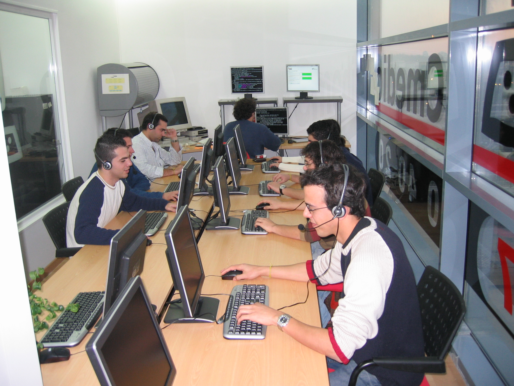
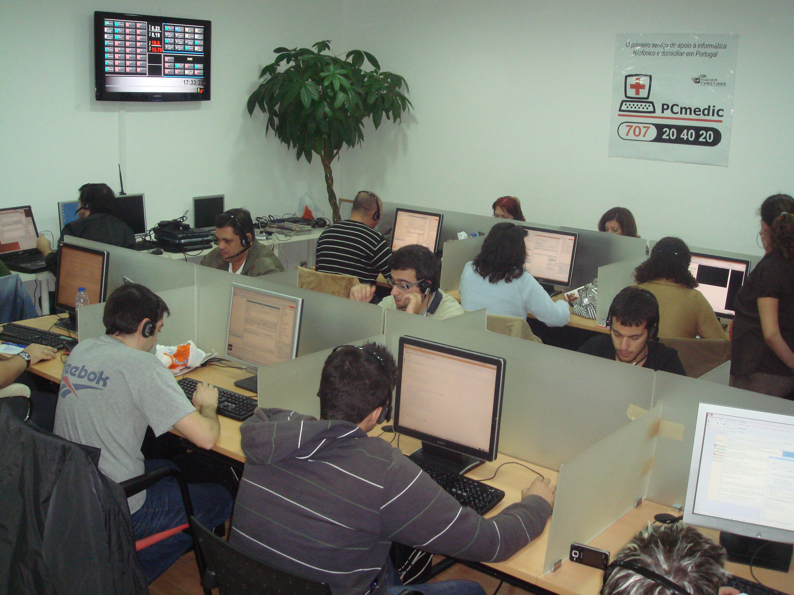
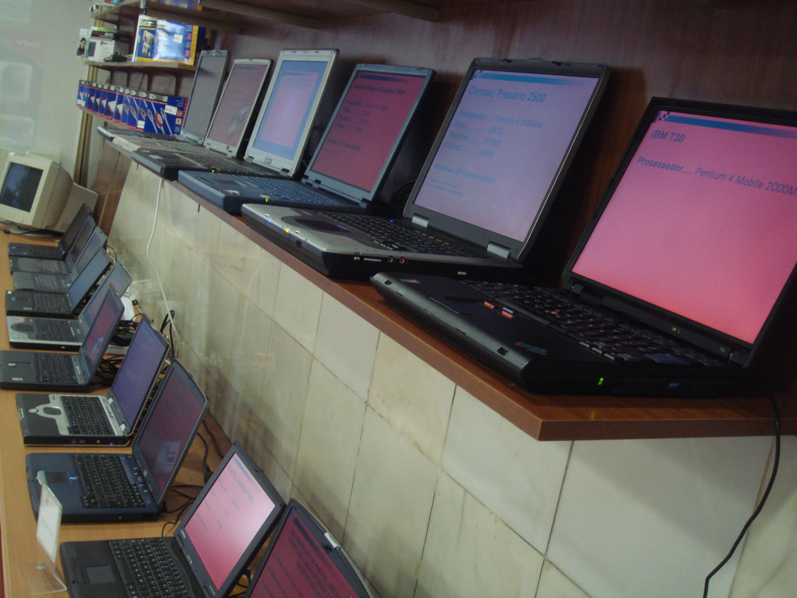

A vida na PCMEDIC...
-

Cargos e funções...
As suas funções exigem algum sacrifício em termos de tempo, e muito tempo passado em monitorização e supervisão. Tem a seu cargo cerca de 60 técnicos que prestam assistência informática ao domicílio e a empresas. As intervenções são agendadas em aplicação com data e horário definido, e abrangem todo o território nacional incluindo ilhas. A PCMEDIC trabalha 24/7, 365 dias por ano, pelo que a disponibilidade horária tem de ser total. Cabe a si, organizar toda a logística a nível de agendamento de intervenções técnicas, formações, dar seguimento a situações que exijam análise técnica. Para além disso, é responsável por toda a organização a nível de parceiros no país e deve garantir que não exista nenhuma área sem cobertura PCMEDIC. A parte financeira também está a s eu cargo, tais como cobranças e facturação. A nível das lojas, passa-se exactamente o mesmo. Supervisiona o bom funcionamento das lojas e deve intervir quando sempre possa existir uma falha procedimental. Está também encarregue da parte da formação.
Os seus projectos...A seu ver, todos os projectos desenvolvidos têm sido interessantes, pois as funções são bastante diversificadas. Excepto no caso da Tele Operação, os seus cargos sempre foram de Gestor. A responsabilidade aumenta assim como a carga de trabalho e horária. No entanto, é bom sentir que tem alguma influência em toda a estrutura e que quando a empresa tem sucesso, uma ínfima parte dele, pertence-lhe directamente.
-

O seu desenvolvimento...
Tendo em conta a evolução que tem tido na empresa em menos de 3 anos, pensa que pode estar satisfeito em relação ao seu desempenho. Porém, é sempre bom ser ambicioso, mas primeiro há que garantir que o que já existe, apresente resultados satisfatórios e que tenha a certeza que as coisas são bem feitas.

Informática vs FuturoA área da informática não tem limites. As novas tecnologias dominam o mercado actual, e a evolução vai ser contínua. No entanto, apesar do domínio das “máquinas” a intervenção humana continuará sempre a existir e a dominar, criando postos de trabalho, e de certo modo fazendo com que as pessoas dediquem cada vez mais tempo das suas vidas a estudar e aprender tudo o que esteja relacionado com a HighTec. Primeiro que tudo, que ter a noção que a informática não é apenas uma área para gamers e redes sociais. Porém, é através desse caminho que normalmente se tem o primeiro contacto e se aprende o “ABC” da informática. O nível de conhecimentos deve ser geral, saber um pouco de tudo e nunca achar que sabe tudo. Quem quer evoluir neste ramo, tem de ter humildade e sobretudo partilhar. Tem de ter presente que é mais importante o “nice to have” do que o “must have”. Tem de haver espírito de sacrifício pois sem dedicação, não se consegue evoluir, e a meu ver, a programação é uma excelente aposta nos nossos dias. Sobretudo, tem de haver muita disciplina!
-
Revistas e Livros
Já podes aceder aos livros e revistas mais recentes na tua biblioteca!

-
Bar da Escola
Movimento TWIST
Entrega no bar pilhas que não utilizes e poupa energia!
-
Horários
SECRETARIA09.30h às 12.30h e 14.00h às 16.30h
CONTABILIDADE09.50h às 12.00h e 14.00h às 16.30h
CENTRO DE RECURSOS09.00h às 17.30h
REPROGRAFIA08.45h às 13.00h 14.00h às 18.00h
-
Mantem-te em contacto!
Email:
info@eped.ptMorada:
Largo Bulhão Pato, nº 56
2825-114 Monte de Caparica
Quinta da TorreTelefone:
+351 212 946 040